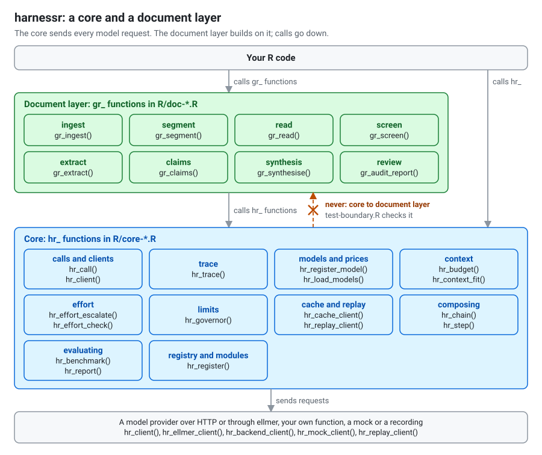

harnessr is a harness for calls to large language models. It composes calls into steps and chains, checks spending limits before each request, can cache replies so a repeated request is paid for once, records every call in a trace you can save and replay offline, and checks what came back. Any client goes through it: an OpenAI-compatible endpoint, any provider ellmer supports, a function of your own, or an offline stand-in.
A document layer is built on that core. For one document, answer_document() picks an ingest, a segmentation and a reading strategy, and returns an answer with the trace of everything it did. For a folder, gr_screen() decides which documents count, gr_extract() fills a typed schema across all of them, and gr_synthesise() writes the result up, citing the rows each section rests on and flagging any sentence that cites none.

Your code can call either layer: the document functions (gr_) build on the core functions (hr_), and the core never calls the document layer.
The guides explain each part in depth and all run offline, without a key. vignette("harnessr") walks through the core in brief and then a first document question. The core guides follow, starting with vignette("core") for calls, clients and the trace, then models and prices, context, effort, limits and caching, composing steps, and measuring. The document guides build on them. All are on the website, https://elkronos.github.io/harnessr/, with the reference for every function.
harnessr was called readgpt up to version 0.6.0. If you have code written for readgpt, vignette("migrate") lists the old names and what replaced them.
Install
Requires R 4.1 or later. The only non-base hard dependencies are digest, httr and jsonlite.
install.packages(c("remotes", "knitr", "rmarkdown"))
remotes::install_github("elkronos/harnessr", build_vignettes = TRUE)build_vignettes = TRUE installs the guides, so vignette("harnessr") works. Building them needs knitr, rmarkdown and Pandoc. Pandoc comes with RStudio; without RStudio, install it from https://pandoc.org/installing.html first, or leave out build_vignettes = TRUE. From a local checkout, remotes::install_local("path/to/harnessr") does the same.
Other packages (pdftools, tesseract and magick, xml2, future, ellmer, shiny) are checked when a feature needs them; a missing one is an error naming it, unless harnessr can carry on without it. vignette("harnessr") lists them.
Quick start
One call through the core, with hr_mock_client() standing in for a model so it runs without a key. The trace records the request, its tokens and its cost:
library(harnessr)
cl <- hr_mock_client(function(m, p) "Revenue was 45.2 million dollars.")
tr <- hr_trace()
res <- hr_call(cl, "What was revenue in fiscal 2024?", trace = tr, label = "ask")
as.data.frame(tr)[, c("stage", "model", "tokens_in", "tokens_out", "usd")]
#> stage model tokens_in tokens_out usd
#> 1 ask mock-model 14 13 0res$text holds the reply and res$ok says whether the call succeeded. vignette("core") covers every kind of client, what a result holds, the trace, structured replies and checks on a reply.
The document layer runs a whole pipeline over a file in one call:
ans <- answer_document("report.pdf", "What was Q3 revenue?", recipe = "needle")
ans$answer
ans$partialThe console block below is real output from the bundled example document, with hr_mock_client() standing in for the API, so you can reproduce it without a key. gr_compare() runs several recipes over one document and extracts it only once, so you can choose a pipeline before committing to it:
cl <- hr_mock_client(function(m, p) "Revenue was 45.2 million dollars.")
cmp <- gr_compare(gr_example(), "What was revenue in fiscal 2024?",
c("fast", "needle", "thorough", "survey"), client = cl)
cmp$summary[, c("recipe", "segmenter", "chunks", "reader", "signature", "settings")]
#> recipe segmenter chunks reader signature
#> 1 fast paragraph 1 stuff all|1|none
#> 2 needle semantic 2 retrieve topk|1|none
#> 3 thorough paragraph 1 map_reduce all|N+logN|tree
#> 4 survey structural 6 hierarchical all|N+tree+1|tree
#> settings
#> 1 max_tokens=4000
#> 2 top_k=8, cite=TRUE, max_tokens=500, overlap_tokens=50
#> 3 overlap_tokens=120
#> 4 max_tokens=1500settings names whatever each recipe changed from the defaults. The bundled example is small (under 600 tokens as gr_ingest() counts them), so fast and thorough fit it in one chunk. On a real report they would not.
Or build a pipeline by hand, one choice per axis:
rec <- gr_recipe("my_pipeline",
ingest = list(clean = c("page_numbers", "hyphenation", "headers_footers")),
segment = list(method = "structural", max_tokens = 800, overlap_tokens = 80),
read = list(reader = "skim", cite = TRUE, model = "gpt-5.6-terra"))
ans <- answer_document("thesis.pdf", "How was the sample recruited?", rec)Connecting a model
Put your OpenAI key in .Renviron as OPENAI_API_KEY=sk-..., or set it for the session:
Sys.setenv(OPENAI_API_KEY = "sk-...")harnessr knows each built-in model’s limits but ships no prices, because providers change them more often than the package is released. Set the price you pay for the model you use, so the default $5 spending limit counts its requests. Without a price, a request is still sent, with a warning that the limit does not cover it.
# Illustrative figures, in USD per million tokens: use your provider's current
# prices.
hr_register_model("gpt-5.6-terra", input_usd = 2, output_usd = 12)Then answer_document() in the quick start runs against the real model, and hr_call() does too when you give it hr_client() in place of the stand-in. vignette("harnessr") covers the other ways to give a key, company gateways, other providers and local models through ellmer, and any other backend. vignette("models") shows how to set many prices from a file and keep them current.
Guides
Each guide is on the website, under the same groups as here, and once installed in R as vignette("name"). The core guides come first because the document guides build on them.
Get started
-
Get started (
harnessr): the ideas, installing, connecting, the core in brief (a call, its trace, prices and limits, context, effort), then a first question about a document checked from start to finish, cost, a glossary.
Core
-
The core: calls, clients and results (
core): calls without a document, every kind of client, what a result holds, the trace, structured replies, checks, signals, errors by class. -
Models, prices and tokens (
models): what harnessr knows about a model, adding one, setting the prices you pay, cost estimates, models with no price or old prices, and counting tokens. -
Context: budgets, fitting and cutting (
context): how much room a prompt has, fitting its pieces into that room, which part of a cut piece is kept, and the cuts the trace records. -
Effort: how hard the model reasons (
effort): which models take a reasoning effort, setting it per call or per stage, what it costs and does to the cache, raising it only when a stage goes wrong, and measuring whether that pays. -
Limits, caching and replay (
runs): what a document run records, spending limits and the governor, parallel batches, paying once with a cache, repeated draws, replaying a run, and what recipes cost. -
Composing steps into chains (
compose): steps of your own and the built-in ones, chains run as one arm, registering a step and checking a module, deriving a chain by dropping or replacing a step, settings and sweeps by path, skills, and a coding sub-agent. -
Measuring and comparing configurations (
evaluate): reference sets and label sheets, benchmarks and their intervals, non-inferiority, judges, checks that run a program, baselines, drift, signals. -
Comparing methods and settings (
compare): worked comparisons of readers, segmenters and chunk sizes, one setting over its values, screening settings and a judge against labels, and how to read each report. -
Settings reference (
settings): every setting of every stage with its default and where it came from, and the extractors, cleaners, segmenters, readers, embedders and recipes.
Documents
-
Getting text out of files (
ingest): PDFs, Word files, web pages and scans, every cleaner, and surveying a folder. -
Cutting documents into chunks (
segment): the segmenters, overlap, minimum size, context, and comparing chunkings. -
Choosing how the model reads (
readers): the reading strategies, recipes, what each costs, and how to choose. -
Many documents and literature reviews (
review): search, screening, calibration and recall, several reviewers, extraction, claims, synthesis, the audit report. -
Extending harnessr (
extending): registering your own extractors, cleaners, segmenters, readers and embedders, declaring their calls and cost, and checking them against the contract.
Upgrade
-
Upgrading from older versions (
migrate): the old names from readgpt and v1, their replacements and the behaviour that changed.
Getting help
Ask questions and report bugs at https://github.com/elkronos/harnessr/issues. CONTRIBUTING.md says how to run the tests and what a pull request must keep true.